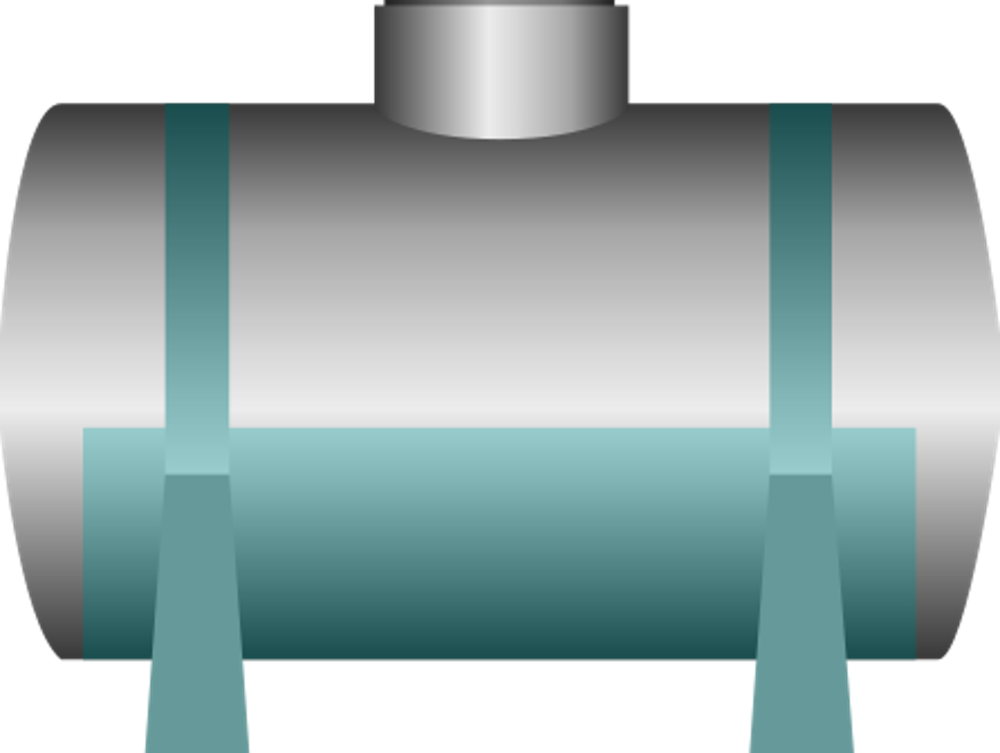
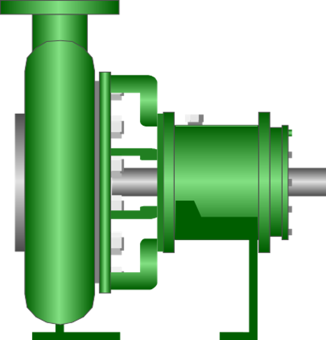
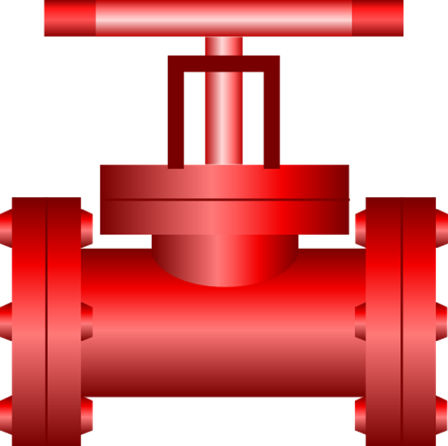
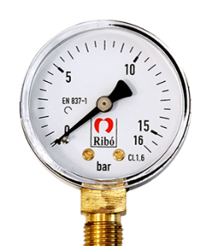
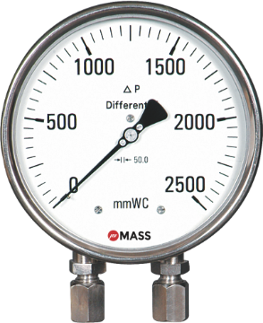
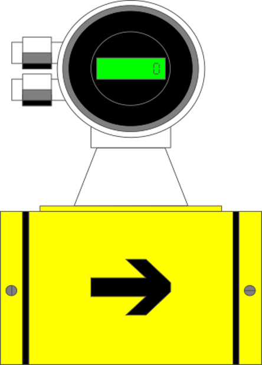

Laboratorio de Fluidos: PÉRDIDAS EN VÁLVULA
Banco hidráulico virtual
Ingresa el nombre del estudiante
APERTURA DE LA VÁLVULA0 %



MANÓMETRO
Entrada
Entrada

MANÓMETRO
Salida
Salida

PÉRDIDA EN VÁLVULA
— mcaLECTURA DIFERENCIAL

FLUJÓMETRO
0,0000 l/s
0,0000 m³/s
➜
BOMBA
Banco de ensayo · agua a 20 °C · g = 9,81 m/s² · Diámetro válvula = 200 mmhacc = 8KQ² / π²gDacc⁴